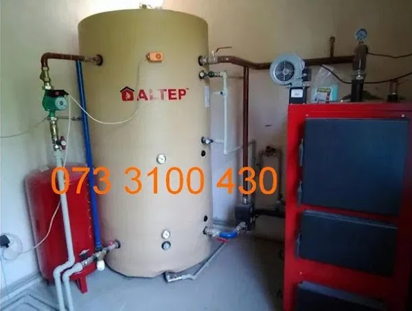

|

|
О Т О П Л Е Н И Е
- Монтаж трасы отопления от 10 грн.
- Установка радиатора отопления от 700 грн.
- Установка радиатора на старое место без подгонки труб от 250 грн.
- Монтаж внутрипольного конвектора ( ниши) от 450 грн.
- Замена стояка отопления от 600 грн.
- Установка котла газового (навесного) от 900 грн.
- Тёплый пол под ключ м2 от 400грн.
- Монтаж гребёнок от 300 грн.
- Установка теплого пола от 70 грн.
- Монтаж теплых стен от 80 грн.
- Монтаж котельной от 5000 грн.
- Проектирование от 3000 грн
- Обвязка котельной загородного дома от 4000 грн.
- Сборка монтаж дымохода мп от 700 грн.
- Перепаковка батареи отопления от 100 грн.
- Установка насоса циркуляции от 400 грн.
- Установка регулятора давления от 250 грн.
- Установка регулятора температуры от 250 грн.
- Изготовление ниши под шкаф коллектора (кирпич, бетон) от 500 грн.
- Снятие заглушек и заполнение системы водой от 300 грн.
- Нарезание резьбы на трубе от 150 грн.
|